BBCode trong RichTextLabel
Giới thiệu
Node class_Label rất phù hợp để hiển thị văn bản cơ bản, nhưng chúng có những hạn chế. Nếu muốn đổi màu chữ hoặc căn lề, bạn chỉ có thể làm điều đó cho toàn bộ label. Bạn không thể cho một phần văn bản có màu khác, hay căn giữa một phần văn bản. Để vượt qua những hạn chế này, bạn sẽ dùng class_RichTextLabel.
class_RichTextLabel cho phép định dạng văn bản phức tạp bằng cú pháp markup hoặc API dựng sẵn. Nó dùng BBCode cho cú pháp markup, một hệ thống thẻ chỉ định quy tắc định dạng cho một phần văn bản. Có thể bạn đã quen với chúng nếu từng dùng diễn đàn (còn gọi là bulletin boards, nên mới có chữ "BB" trong "BBCode").
Khác với Label, RichTextLabel còn có thanh cuộn dọc riêng. Thanh cuộn này tự động hiển thị nếu văn bản không vừa trong kích thước của control. Có thể tắt thanh cuộn bằng cách bỏ chọn thuộc tính Scroll Active trong inspector của RichTextLabel.
Lưu ý rằng ở một mức độ nào đó, các thẻ BBCode cũng có thể được dùng cho những trường hợp khác:
BBCode có thể được dùng để định dạng chú thích trong mã nguồn XML của tài liệu tham chiếu lớp.
BBCode có thể được dùng trong chú thích tài liệu GDScript.
BBCode có thể được dùng khi in văn bản định dạng ra bảng Output bên dưới.
Xem thêm
Bạn có thể xem BBCode trong RichTextLabel hoạt động thực tế qua dự án demo Rich Text Label with BBCode.
Sử dụng BBCode
Theo mặc định, class_RichTextLabel hoạt động như một class_Label bình thường. Nó có thuộc tính text mà bạn có thể chỉnh sửa để có văn bản định dạng đồng nhất. Để dùng BBCode định dạng văn bản phong phú, bạn cần bật chế độ BBCode bằng cách đặt bbcode_enabled. Sau đó, bạn có thể chỉnh sửa thuộc tính text bằng các thẻ có sẵn. Cả hai thuộc tính nằm ở đầu inspector sau khi chọn một node RichTextLabel.
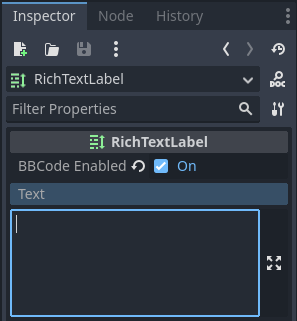
Ví dụ, BBCode [color=green]test[/color] sẽ hiển thị chữ "test" màu xanh lá.
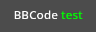
Hầu hết BBCode gồm 3 phần: thẻ mở, nội dung và thẻ đóng. Thẻ mở đánh dấu điểm bắt đầu của phần được định dạng, và cũng có thể mang một số tùy chọn cấu hình. Một số thẻ mở, như thẻ color ở trên, còn yêu cầu một giá trị để hoạt động. Các thẻ mở khác có thể nhận nhiều tùy chọn (phân tách bằng dấu cách bên trong thẻ mở). Thẻ đóng đánh dấu điểm kết thúc của phần được định dạng. Trong một số trường hợp, có thể bỏ qua cả thẻ đóng lẫn nội dung.
Khác với BBCode trong HTML, khoảng trắng ở đầu/cuối không bị RichTextLabel loại bỏ khi hiển thị. Các dấu cách liên tiếp cũng được hiển thị nguyên trạng trong kết quả cuối. Nghĩa là khi hiển thị một khối code trong RichTextLabel, bạn không cần dùng thẻ văn bản định dạng sẵn.
[tag]content[/tag]
[tag=value]content[/tag]
[tag option1=value1 option2=value2]content[/tag]
[tag][/tag]
[tag]
Ghi chú
RichTextLabel không hỗ trợ các thẻ BBCode lồng chéo nhau. Ví dụ, thay vì dùng:
[b]bold[i]bold italic[/b]italic[/i]
Hãy dùng:
[b]bold[i]bold italic[/i][/b][i]italic[/i]
Xử lý đầu vào của người dùng an toàn
Trong trường hợp người dùng có thể tự do nhập văn bản (như chat trong game nhiều người chơi), bạn nên đảm bảo người dùng không thể dùng các thẻ BBCode tùy ý sẽ được RichTextLabel phân tích. Điều này nhằm tránh lạm dụng định dạng, có thể gây rắc rối nếu RichTextLabel của bạn xử lý thẻ [url] (vì người chơi có thể tạo liên kết nhấp được tới trang lừa đảo hoặc tương tự).
Dùng thẻ [lb] và/hoặc [rb] của RichTextLabel, ta có thể thay dấu ngoặc mở và/hoặc đóng của bất kỳ thẻ BBCode nào trong tin nhắn bằng các thẻ escape đó. Điều này ngăn người dùng dùng BBCode sẽ được phân tích thành thẻ – thay vào đó, BBCode sẽ được hiển thị như văn bản.
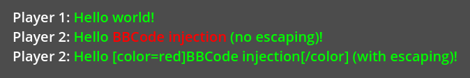
Ví dụ đầu vào người dùng chưa escape dẫn đến BBCode injection (dòng 2) và đầu vào người dùng đã escape (dòng 3)
Hình ảnh trên được tạo bằng script sau:
extends RichTextLabel
func _ready():
append_chat_line("Player 1", "Hello world!")
append_chat_line("Player 2", "Hello [color=red]BBCode injection[/color] (no escaping)!")
append_chat_line_escaped("Player 2", "Hello [color=red]BBCode injection[/color] (with escaping)!")
# Returns escaped BBCode that won't be parsed by RichTextLabel as tags.
func escape_bbcode(bbcode_text):
# We only need to replace opening brackets to prevent tags from being parsed.
return bbcode_text.replace("[", "[lb]")
# Appends the user's message as-is, without escaping. This is dangerous!
func append_chat_line(username, message):
append_text("%s: [color=green]%s[/color]\n" % [username, message])
# Appends the user's message with escaping.
# Remember to escape both the player name and message contents.
func append_chat_line_escaped(username, message):
append_text("%s: [color=green]%s[/color]\n" % [escape_bbcode(username), escape_bbcode(message)])
Hiệu năng
Trong hầu hết trường hợp, bạn có thể dùng BBCode trực tiếp vì định dạng văn bản hiếm khi là tác vụ nặng. Tuy nhiên, với các RichTextLabel đặc biệt lớn (như log console dài hàng nghìn dòng), bạn có thể gặp hiện tượng giật trong lúc chơi khi văn bản của RichTextLabel được cập nhật.
Có một số cách để giảm thiểu vấn đề này:
Dùng hàm
append_text()thay vì nối thêm vào thuộc tínhtext. Hàm này chỉ phân tích BBCode cho phần văn bản được thêm vào, thay vì phân tích BBCode của toàn bộ thuộc tínhtext.Dùng các hàm
push_[tag]()vàpop()để thêm thẻ vào RichTextLabel thay vì dùng BBCode.Bật thuộc tính Threading > Threaded trong RichTextLabel. Việc này sẽ không tăng tốc xử lý, nhưng sẽ tránh chặn luồng chính, nhờ đó tránh giật trong lúc chơi. Chỉ bật threading nếu dự án của bạn thực sự cần, vì threading có chi phí phụ trội nhất định.
Dùng hàm push_[tag]() và pop() thay cho BBCode
Nếu không muốn dùng BBCode vì lý do hiệu năng, bạn có thể dùng các hàm do RichTextLabel cung cấp để tạo thẻ định dạng mà không cần viết BBCode trong văn bản.
Mỗi thẻ BBCode (kể cả hiệu ứng) đều có một hàm push_[tag]() (trong đó [tag] là tên thẻ). Ngoài ra còn có vài hàm tiện ích, chẳng hạn push_bold_italics() kết hợp cả push_bold() và push_italics() thành một thẻ duy nhất. Xem tài liệu tham chiếu lớp RichTextLabel để có danh sách đầy đủ các hàm push_[tag]().
Hàm pop() được dùng để kết thúc bất kỳ thẻ nào. Vì BBCode là một ngăn xếp thẻ, dùng pop() sẽ đóng các thẻ được mở gần nhất trước.
Script sau sẽ cho kết quả hiển thị giống như khi dùng BBCode [color=green]test [i]example[/i][/color]:
extends RichTextLabel
func _ready():
append_text("BBCode ") # Trailing space separates words from each other.
push_color(Color.GREEN)
append_text("test ") # Trailing space separates words from each other.
push_italics()
append_text("example")
pop() # Ends the tag opened by `push_italics()`.
pop() # Ends the tag opened by `push_color()`.
Cảnh báo
Không đặt trực tiếp thuộc tính text khi dùng các hàm định dạng. Nối thêm vào thuộc tính text sẽ xóa mọi thay đổi đã thực hiện trên RichTextLabel bằng các hàm append_text(), push_[tag]() và pop().
Reference
Xem thêm
Một số thẻ BBCode này có thể dùng trong tooltip của các biến script @export cũng như trong mã nguồn XML của tài liệu tham chiếu lớp. Để biết thêm thông tin, xem BBCode trong tài liệu tham chiếu lớp.
Thẻ |
Ví dụ |
b
Làm
{text} dùng font đậm (hoặc đậm nghiêng) của RichTextLabel. |
|
i
Làm
{text} dùng font nghiêng (hoặc đậm nghiêng) của RichTextLabel. |
|
u
Gạch chân
{text}. |
|
s
Gạch ngang
{text}. |
|
code
Làm
{text} dùng font mono của RichTextLabel. |
|
char
Thêm ký tự Unicode có mã UTF-32 thập lục phân
{codepoint}. |
|
p
Thêm đoạn văn mới với
{text}. Hỗ trợ tùy chọn cấu hình, xem Tùy chọn đoạn văn. |
[p]{text}[/p][p {options}]{text}[/p] |
br
Thêm ngắt dòng trong văn bản mà không thêm đoạn văn mới. Nếu dùng trong danh sách, thẻ này sẽ không tạo mục danh sách mới mà thêm ngắt dòng trong mục hiện tại.
|
|
hr
Thêm một đường kẻ ngang để phân tách nội dung. Hỗ trợ tùy chọn cấu hình, xem Tùy chọn đường kẻ ngang.
|
[hr][hr {options}] |
center
Căn giữa
{text} theo chiều ngang.Tương đương
[p align=center]. |
|
left
Căn trái
{text} theo chiều ngang.Tương đương
[p align=left]. |
|
right
Căn phải
{text} theo chiều ngang.Tương đương
[p align=right]. |
|
fill
Làm
{text} lấp đầy toàn bộ chiều rộng của RichTextLabel.Tương đương
[p align=fill]. |
|
indent
Thụt lề
{text} một mức. Độ rộng thụt lề giống như với [ul] hoặc [ol], nhưng không có dấu đầu dòng. |
|
url
Tạo một siêu liên kết (văn bản gạch chân và nhấp được). Có thể chứa
{text} tùy chọn hoặc hiển thị nguyên {link}. Hỗ trợ tùy chọn cấu hình, xem Tùy chọn URL.Phải được xử lý bằng signal "meta_clicked" mới có tác dụng, xem Xử lý khi nhấp vào thẻ [url].
|
[url]{link}[/url][url={link}]{text}[/url][url {options}]{text}[/url] |
hint
Tạo một gợi ý tooltip hiển thị khi di chuột lên văn bản. Dù không bắt buộc, nên đặt văn bản tooltip giữa dấu nháy kép hoặc nháy đơn. Lưu ý rằng không thể escape dấu nháy bằng
\" hoặc \'. Để dùng dấu nháy đơn làm dấu lược trong chuỗi gợi ý, bạn phải dùng dấu nháy kép để bao chuỗi. |
[hint="{tooltip text displayed on hover}"]{text}[/hint] |
img
Chèn một hình ảnh từ
{path} (có thể là bất kỳ resource class_Texture2D hợp lệ nào).Nếu cung cấp
{width}, hình ảnh sẽ cố gắng vừa với chiều rộng đó mà vẫn giữ tỷ lệ khung hình.Nếu cung cấp cả
{width} và {height}, hình ảnh sẽ được co giãn theo kích thước đó.Thêm
% vào cuối giá trị {width} hoặc {height} để chỉ định nó theo phần trăm chiều rộng của control thay vì pixel.Thêm
em vào cuối giá trị {width} hoặc {height} để chỉ định nó theo tỷ lệ với cỡ font hiện tại. Ví dụ, height=1em sẽ làm hình ảnh cao bằng văn bản xung quanh.Nếu cung cấp cấu hình
{valign}, hình ảnh sẽ cố gắng căn theo văn bản xung quanh, xem Căn dọc hình ảnh và bảng.Hỗ trợ tùy chọn cấu hình, xem Tùy chọn hình ảnh.
|
[img]{path}[/img][img={width}]{path}[/img][img={width}x{height}]{path}[/img][img={valign}]{path}[/img][img {options}]{path}[/img] |
[font={path}]{text}[/font][font {options}]{text}[/font] |
|
font_size
Dùng cỡ font tùy chỉnh cho
{text}. |
|
dropcap
Dùng cỡ font và màu khác cho
{text}, đồng thời cho nội dung của thẻ trải dài nhiều dòng nếu đủ lớn.Một drop cap thường là một ký tự viết hoa, nhưng
[dropcap] hỗ trợ chứa nhiều ký tự. Các giá trị margins phân tách bằng dấu phẩy và có thể dương, bằng không hoặc âm. Các giá trị không được phân tách bằng dấu cách; nếu không, các giá trị sẽ không được phân tích đúng. Lề trên và lề dưới âm đặc biệt hữu ích để cho phần còn lại của đoạn văn hiển thị bên dưới dropcap. |
|
opentype_features
Bật các tính năng font OpenType tùy chỉnh cho
{text}. Các tính năng phải được cung cấp dưới dạng {list} phân tách bằng dấu phẩy. Các giá trị không được phân tách bằng dấu cách; nếu không, danh sách sẽ không được phân tích đúng. |
[opentype_features={list}]{text}[/opentype_features] |
lang
Ghi đè ngôn ngữ cho
{text} vốn được đặt bởi thuộc tính BiDi > Language trong class_RichTextLabel. {code} phải là một mã ngôn ngữ ISO. Có thể dùng để buộc dùng một hệ chữ viết cụ thể cho một ngôn ngữ mà không cần bắt đầu đoạn văn mới. Một số tệp font có thể chứa các ký tự thay thế riêng cho từng hệ chữ viết, khi đó chúng sẽ được sử dụng. |
|
color
Đổi màu của
{text}. Màu phải được cung cấp bằng tên thông dụng (xem Màu theo tên) hoặc dùng định dạng HEX (ví dụ #ff00ff, xem Mã màu thập lục phân). |
|
bgcolor
Vẽ màu phía sau
{text}. Có thể dùng để tô sáng văn bản. Nhận các giá trị giống thẻ color. Theo mặc định có một khoảng đệm nhỏ, được điều khiển bởi các theme item text_highlight_h_padding và text_highlight_v_padding trong node RichTextLabel. Đặt padding thành 0 để tránh khả năng chồng lấn khi có màu nền trên các dòng/cột kề nhau. |
|
fgcolor
Vẽ màu phía trước
{text}. Có thể dùng để "che" văn bản bằng một màu tiền cảnh đục. Nhận các giá trị giống thẻ color. Theo mặc định có một khoảng đệm nhỏ, được điều khiển bởi các theme item text_highlight_h_padding và text_highlight_v_padding trong node RichTextLabel. Đặt padding thành 0 để tránh khả năng chồng lấn khi có màu tiền cảnh trên các dòng/cột kề nhau. |
|
outline_size
Dùng độ dày viền font tùy chỉnh cho
{text}. |
[outline_size={size}]{text}[/outline_size] |
outline_color
Dùng màu viền tùy chỉnh cho
{text}. Nhận các giá trị giống thẻ color. |
[outline_color={code/name}]{text}[/outline_color] |
table
Tạo một bảng với
{number} cột. Dùng thẻ cell để định nghĩa các ô của bảng.Nếu cung cấp cấu hình
{valign}, bảng sẽ cố gắng căn theo văn bản xung quanh, xem Căn dọc hình ảnh và bảng.Nếu dùng căn theo baseline, bảng sẽ được căn theo baseline của hàng có chỉ số
{alignment_row} (bắt đầu từ 0).{name} là tên bảng dành cho ứng dụng hỗ trợ (trình đọc màn hình). |
[table={number}]{cells}[/table][table={number},{valign}]{cells}[/table][table={number},{valign},{alignment_row}]{cells}[/table][table={number},{valign},{alignment_row} name={name}]{cells}[/table] |
cell
Thêm một ô chứa
{text} vào bảng.Nếu cung cấp
{ratio}, ô sẽ cố gắng mở rộng theo giá trị đó, tỷ lệ với các ô khác và giá trị ratio của chúng.Hỗ trợ tùy chọn cấu hình, xem Tùy chọn ô.
|
[cell]{text}[/cell][cell={ratio}]{text}[/cell][cell {options}]{text}[/cell] |
ul
Thêm một danh sách không thứ tự. Các
{items} của danh sách phải được cung cấp bằng cách đặt mỗi mục trên một dòng văn bản.Có thể tùy chỉnh dấu đầu dòng bằng tham số
{bullet}, xem Dấu đầu dòng của danh sách không thứ tự. |
[ul]{items}[/ul][ul bullet={bullet}]{items}[/ul] |
ol
Thêm một danh sách có thứ tự (đánh số) với
{type} đã cho (xem Các kiểu danh sách có thứ tự). Các {items} của danh sách phải được cung cấp bằng cách đặt mỗi mục trên một dòng văn bản. |
|
lb, rb
Lần lượt thêm
[ và ]. Cho phép escape markup BBCode.Đây là các thẻ tự đóng, nghĩa là bạn không cần đóng chúng (và không có thẻ đóng
[/lb] hay [/rb]). |
[lb]b[rb]text[lb]/b[rb] sẽ hiển thị thành [b]text[/b]. |
Một số ký tự điều khiển Unicode có thể được thêm bằng các thẻ tự đóng riêng của chúng.
Cách này giúp bảo trì dễ hơn so với việc dán trực tiếp
các ký tự điều khiển đó vào văn bản.
|
[lrm] (left-to-right mark), [rlm] (right-to-left mark), [lre] (left-to-right embedding),[rle] (right-to-left embedding), [lro] (left-to-right override), [rlo] (right-to-left override),[pdf] (pop directional formatting), [alm] (Arabic letter mark), [lri] (left-to-right isolate),[rli] (right-to-left isolate), [fsi] (first strong isolate), [pdi] (pop directional isolate),[zwj] (zero-width joiner), [zwnj] (zero-width non-joiner), [wj] (word joiner),[shy] (soft hyphen) |
Ghi chú
Các thẻ định dạng đậm ([b]) và nghiêng ([i]) hoạt động tốt nhất nếu các font tùy chỉnh phù hợp được thiết lập trong theme override của RichTextLabelNode. Nếu không có font đậm hoặc nghiêng tùy chỉnh nào được định nghĩa, Godot sẽ tạo ra font đậm và nghiêng giả lập. Các font này hiếm khi trông đẹp so với các biến thể font đậm/nghiêng được thiết kế thủ công.
Thẻ đơn cách ([code]) chỉ hoạt động nếu một font tùy chỉnh được thiết lập trong theme override của node RichTextLabel. Nếu không, văn bản đơn cách sẽ dùng font thông thường.
Hiện chưa có thẻ BBCode nào để điều khiển việc căn giữa văn bản theo chiều dọc.
Với mọi thẻ, các tùy chọn đều có thể bỏ qua.
Tùy chọn đoạn văn
align
Values
left(hoặcl),center(hoặcc),right(hoặcr),fill(hoặcf)Default
leftCăn lề ngang của văn bản.
bidi_override, st
Values
default(hoặcd),uri(hoặcu),file(hoặcf),email(hoặce),list(hoặcl),none(hoặcn),custom(hoặcc)Default
defaultGhi đè văn bản có cấu trúc.
justification_flags, jst
Values
Danh sách các giá trị sau phân tách bằng dấu phẩy (không có dấu cách sau mỗi dấu phẩy):
kashida(hoặck),word(hoặcw),trim(hoặctr),after_last_tab(hoặclt),skip_last(hoặcsl),skip_last_with_chars(hoặcsv),do_not_skip_single(hoặcns).Default
word,kashida,skip_last,do_not_skip_singleTùy chọn căn đều (fill alignment). Xem class_TextServer để biết thêm chi tiết.
direction, dir
Values
ltr(hoặcl),rtl(hoặcr),auto(hoặca)Default
Kế thừa
Hướng BiDi cơ sở.
language, lang
Values
Mã ngôn ngữ ISO. Xem Mã locale
Default
Kế thừa
Ghi đè locale. Một số tệp font có thể chứa các ký tự thay thế riêng cho từng hệ chữ viết, khi đó chúng sẽ được sử dụng.
tab_stops
Values
Danh sách số thực dấu phẩy động, ví dụ
10.0,30.0Default
Độ rộng ký tự dấu cách trong font
Ghi đè độ lệch ngang cho mỗi ký tự tab. Khi đến cuối danh sách, các tab stop sẽ lặp lại. Ví dụ, nếu bạn đặt
tab_stopsthành10.0,30.0, tab đầu tiên sẽ ở10pixel, tab thứ hai ở10 + 30 = 40pixel, và tab thứ ba ở10 + 30 + 10 = 50pixel tính từ gốc của RichTextLabel.
Xử lý khi nhấp vào thẻ [url]
Theo mặc định, thẻ [url] không làm gì khi được nhấp. Điều này cho phép dùng thẻ [url] linh hoạt thay vì giới hạn chúng ở việc mở URL trong trình duyệt web.
Để xử lý thẻ [url] được nhấp, hãy kết nối signal meta_clicked của node RichTextLabel với một hàm trong script.
Ví dụ, phương thức sau có thể được kết nối với meta_clicked để mở URL được nhấp bằng trình duyệt web mặc định của người dùng:
# This assumes RichTextLabel's `meta_clicked` signal was connected to
# the function below using the signal connection dialog.
func _richtextlabel_on_meta_clicked(meta):
# `meta` is not guaranteed to be a String, so convert it to a String
# to avoid script errors at runtime.
OS.shell_open(str(meta))
Với các trường hợp nâng cao hơn, bạn cũng có thể lưu JSON trong tùy chọn của thẻ [url] và phân tích nó trong hàm xử lý signal meta_clicked. Ví dụ:
[url={"example": "value"}]JSON[/url]
Tùy chọn đường kẻ ngang
color
Values
Tên màu hoặc màu ở định dạng HEX
Default
Color(1, 1, 1, 1)Màu phủ của đường kẻ (modulation).
height
Values
Số nguyên
Default
2Chiều cao mục tiêu của đường kẻ tính bằng pixel, thêm
%vào cuối giá trị để chỉ định theo phần trăm chiều rộng của control thay vì pixel.width
Values
Số nguyên
Default
90%Chiều rộng mục tiêu của đường kẻ tính bằng pixel, thêm
%vào cuối giá trị để chỉ định theo phần trăm chiều rộng của control thay vì pixel.align
Values
left(hoặcl),center(hoặcc),right(hoặcr)Default
centerCăn lề ngang.
Tùy chọn URL
underline
Values
always,never,hoverDefault
alwaysChế độ gạch chân URL.
tooltip
Values
Chuỗi.
Default
Tooltip của URL.
href
Values
Chuỗi.
Default
Địa chỉ đích của URL.
Tùy chọn hình ảnh
color
Values
Tên màu hoặc màu ở định dạng HEX
Default
Kế thừa
Màu phủ của hình ảnh (modulation).
height
Values
Số thực dấu phẩy động
Default
Kế thừa
Chiều cao mục tiêu của hình ảnh tính bằng pixel.
Có thể chỉ định các đơn vị khác thay cho pixel:
Thêm
%vào cuối giá trị để chỉ định theo phần trăm chiều rộng của control thay vì pixel. Ví dụ,height=50%sẽ làm hình ảnh cao bằng một nửa chiều rộng của control.Thêm
emvào cuối giá trị để chỉ định theo tỷ lệ với cỡ font xung quanh thay vì pixel. Ví dụ,height=1emsẽ làm hình ảnh cao bằng văn bản xung quanh.
width
Values
Số thực dấu phẩy động
Default
Kế thừa
Chiều rộng mục tiêu của hình ảnh tính bằng pixel.
Có thể chỉ định các đơn vị khác thay cho pixel:
Thêm
%vào cuối giá trị để chỉ định theo phần trăm chiều rộng của control thay vì pixel. Ví dụ,width=50%sẽ làm hình ảnh chiếm một nửa chiều rộng của control.Thêm
emvào cuối giá trị để chỉ định theo tỷ lệ với cỡ font xung quanh thay vì pixel. Ví dụ,width=1emsẽ làm hình ảnh rộng bằng chiều cao của văn bản xung quanh.
region
Values
x,y,width,height tính bằng pixel
Default
Kế thừa
Vùng chữ nhật (region rect) của hình ảnh. Có thể dùng để hiển thị một hình đơn lẻ từ spritesheet.
pad
Values
false,trueDefault
falseNếu đặt thành
truevà hình ảnh nhỏ hơn kích thước chỉ định bởiwidthvàheight, phần đệm sẽ được thêm vào hình ảnh để khớp kích thước thay vì phóng to.tooltip
Values
String
Default
Tooltip của hình ảnh.
align
Values
Default
center,centerCăn hình ảnh theo văn bản xung quanh.
alt
Values
String
Default
Mô tả hình ảnh dành cho ứng dụng hỗ trợ (trình đọc màn hình).
Căn dọc hình ảnh và bảng
Khi cung cấp giá trị căn dọc cho thẻ [img] hoặc [table], hình ảnh/bảng sẽ cố gắng tự căn theo văn bản xung quanh. Việc căn được thực hiện bằng một điểm dọc của hình ảnh và một điểm dọc của văn bản. Có 3 điểm khả dĩ trên hình ảnh (top, center và bottom) và 4 điểm khả dĩ trên văn bản và bảng (top, center, baseline và bottom), có thể dùng theo bất kỳ tổ hợp nào.
Để chỉ định cả hai điểm, hãy dùng tên đầy đủ hoặc tên ngắn của chúng làm giá trị cho thẻ hình ảnh/bảng:
text [img=top,bottom]...[/img] text
text [img=center,center]...[/img] text
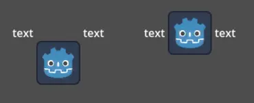
text [table=3,center]...[/table] text # Center to center.
text [table=3,top,bottom]...[/table] text # Top of the table to the bottom of text.
text [table=3,baseline,baseline,1]...[/table] text # Baseline of the second row (rows use zero-based indexing) to the baseline of text.
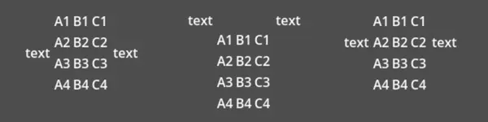
Bạn cũng có thể chỉ định chỉ một giá trị (top, center hoặc bottom) để dùng preset tương ứng (lần lượt là top-top, center-center và bottom-bottom).
Tên ngắn của các giá trị là t (top), c (center), l (baseline) và b (bottom).
Tùy chọn font
name, n
Values
Một đường dẫn resource Font hợp lệ.
Default
Kế thừa
Đường dẫn resource font.
size, s
Values
Số tính bằng pixel.
Default
Kế thừa
Cỡ font tùy chỉnh.
glyph_spacing, gl
Values
Số tính bằng pixel.
Default
Kế thừa
Khoảng cách thêm cho mỗi glyph.
space_spacing, sp
Values
Số tính bằng pixel.
Default
Kế thừa
Khoảng cách thêm cho ký tự dấu cách.
top_spacing, top
Values
Số tính bằng pixel.
Default
Kế thừa
Khoảng cách thêm ở phía trên dòng.
bottom_spacing, bt
Values
Số tính bằng pixel.
Default
Kế thừa
Khoảng cách thêm ở phía dưới dòng.
embolden, emb
Values
Số thực dấu phẩy động.
Default
0.0Độ đậm của font; nếu khác không, viền nét chữ sẽ được làm đậm. Giá trị âm làm giảm độ dày nét.
face_index, fi
Values
Số nguyên.
Default
0Chỉ số face đang dùng trong bộ sưu tập TrueType / OpenType.
slant, sln
Values
Số thực dấu phẩy động.
Default
0.0Độ nghiêng của font; giá trị dương làm glyph nghiêng sang phải, giá trị âm nghiêng sang trái.
opentype_variation, otv
Values
Danh sách các thẻ biến thể OpenType phân tách bằng dấu phẩy (không có dấu cách sau mỗi dấu phẩy).
Default
Tọa độ biến thể OpenType của font. Xem thẻ biến thể OpenType.
Ghi chú: Giá trị nên được bao trong
"để có thể dùng=bên trong:
[font otv="wght=200,wdth=400"] # Sets variable font weight and width.
opentype_features, otf
Values
Danh sách các thẻ tính năng OpenType phân tách bằng dấu phẩy (không có dấu cách sau mỗi dấu phẩy).
Default
Các tính năng OpenType của font. Xem thẻ tính năng OpenType.
Ghi chú: Giá trị nên được bao trong
"để có thể dùng=bên trong:
[font otf="calt=0,zero=1"] # Disable contextual alternates, enable slashed zero.
Màu theo tên
Với các thẻ cho phép chỉ định màu theo tên, bạn có thể dùng tên các hằng số từ lớp dựng sẵn class_Color. Màu theo tên có thể được viết theo nhiều kiểu chữ hoa/thường khác nhau: DARK_RED, DarkRed và darkred sẽ cho kết quả hoàn toàn giống nhau.
Xem hình này để có danh sách các hằng số màu:
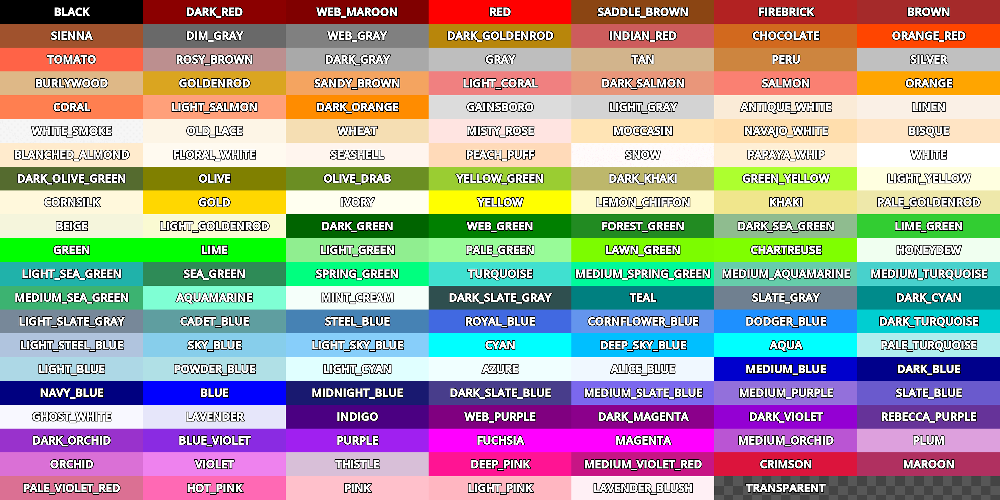

Mã màu thập lục phân
Với màu RGB đục, mọi mã thập lục phân 6 chữ số hợp lệ đều được hỗ trợ, ví dụ [color=#ffffff]white[/color]. Mã màu RGB rút gọn như #6f2 (tương đương #66ff22) cũng được hỗ trợ.
Với màu RGB trong suốt, có thể dùng mọi mã thập lục phân RGBA 8 chữ số, ví dụ [color=#ffffff88]translucent white[/color]. Lưu ý rằng kênh alpha là thành phần cuối cùng của mã màu, không phải đầu tiên. Mã màu RGBA rút gọn như #6f28 (tương đương #66ff2288) cũng được hỗ trợ.
Tùy chọn ô
shrink
Values
false,trueDefault
trueNếu là
true, ô có thể co lại vừa với nội dung.expand
Values
Số nguyên
Default
1
Tỷ lệ mở rộng của ô. Giá trị này xác định những ô nào sẽ cố gắng mở rộng, tỷ lệ với các ô khác và tỷ lệ mở rộng của chúng.
border
Values
Tên màu hoặc màu ở định dạng HEX
Default
Kế thừa
Màu viền ô.
bg
Values
Tên màu hoặc màu ở định dạng HEX
Default
Kế thừa
Màu nền ô. Để có nền xen kẽ cho hàng lẻ/chẵn, bạn có thể dùng
bg=odd_color,even_color.padding
Values
4 số thực dấu phẩy động phân tách bằng dấu phẩy (không có dấu cách sau mỗi dấu phẩy)
Default
0,0,0,0Khoảng đệm trái, trên, phải và dưới của ô.
Dấu đầu dòng của danh sách không thứ tự
Theo mặc định, thẻ [ul] dùng glyph Unicode U+2022 "Bullet" làm ký tự đầu dòng. Hành vi này tương tự trình duyệt web. Có thể tùy chỉnh ký tự đầu dòng bằng [ul bullet={bullet}]. Nếu được cung cấp, tham số {bullet} này phải là một chuỗi không có dấu nháy bao quanh (ví dụ [bullet=*]). Bạn có thể thêm dấu cách sau ký tự đầu dòng để tăng khoảng cách giữa dấu đầu dòng và văn bản của mục danh sách.
Xem Bullet (typography) trên Wikipedia để có danh sách các ký tự đầu dòng thông dụng mà bạn có thể dán trực tiếp vào tham số bullet.
Các kiểu danh sách có thứ tự
Danh sách có thứ tự có thể dùng để tự động đánh dấu các mục bằng số hoặc chữ cái theo thứ tự tăng dần. Thẻ này hỗ trợ các tùy chọn kiểu sau:
1- Số, dùng hệ thống đánh số riêng của ngôn ngữ nếu có thể.a,A- Chữ cái Latin viết thường và viết hoa.i,I- Số La Mã viết thường và viết hoa.
Hiệu ứng văn bản
BBCode cũng có thể được dùng để tạo các hiệu ứng văn bản khác nhau, có thể tùy chọn tạo hoạt ảnh. Godot cung cấp sẵn nhiều hiệu ứng có thể tùy chỉnh, và bạn cũng có thể dễ dàng tạo hiệu ứng của riêng mình. Theo mặc định, các hiệu ứng hoạt ảnh sẽ tạm dừng khi SceneTree bị tạm dừng. Bạn có thể thay đổi hành vi này bằng cách điều chỉnh thuộc tính Process > Mode của RichTextLabel.
Tất cả ví dụ bên dưới đều ghi giá trị mặc định của các tùy chọn trong định dạng thẻ được liệt kê.
Ghi chú
Các hiệu ứng văn bản làm thay đổi vị trí ký tự có thể khiến ký tự bị cắt bởi giới hạn của node RichTextLabel.
Bạn có thể khắc phục điều này bằng cách tắt Control > Layout > Clip Contents trong inspector sau khi chọn node RichTextLabel, hoặc đảm bảo có đủ lề xung quanh văn bản bằng cách thêm ngắt dòng phía trên và phía dưới dòng dùng hiệu ứng.
Pulse
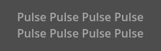
Pulse tạo hiệu ứng nhấp nháy dạng nhịp có hoạt ảnh, nhân độ mờ đục và màu của từng ký tự. Hiệu ứng này có thể dùng để thu hút sự chú ý vào một đoạn văn bản cụ thể. Định dạng thẻ của nó là [pulse freq=1.0 color=#ffffff40 ease=-2.0]{text}[/pulse].
freq điều khiển tần số của nửa chu kỳ nhịp (càng cao càng nhanh). Một chu kỳ nhịp đầy đủ mất 2 * (1.0 / freq) giây. color là hệ số nhân màu đích khi nhấp nháy. Giá trị mặc định làm văn bản mờ đi gần hết, nhưng không hoàn toàn. ease là số mũ của hàm easing được dùng. Giá trị âm cho easing kiểu in-out, đó là lý do giá trị mặc định là -2.0.
Wave
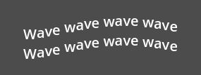
Wave làm văn bản di chuyển lên xuống. Định dạng thẻ của nó là [wave amp=50.0 freq=5.0 connected=1]{text}[/wave].
amp điều khiển độ cao thấp của hiệu ứng, còn freq điều khiển tốc độ văn bản di chuyển lên xuống. Giá trị freq bằng 0 sẽ không tạo ra sóng nào nhìn thấy được, và giá trị freq âm cũng sẽ không hiển thị sóng. Nếu connected là 1 (mặc định), các glyph có chữ ghép (ligature) sẽ được di chuyển cùng nhau. Nếu connected là 0, mỗi glyph được di chuyển riêng lẻ ngay cả khi chúng được nối bằng chữ ghép. Điều này có thể giúp tránh một số vấn đề kết xuất với chữ ghép của phông chữ.
Tornado
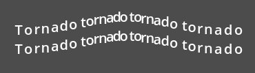
Tornado làm văn bản di chuyển theo vòng tròn. Định dạng thẻ của nó là [tornado radius=10.0 freq=1.0 connected=1]{text}[/tornado].
radius là bán kính của vòng tròn điều khiển độ lệch, freq là tốc độ văn bản di chuyển theo vòng tròn. Giá trị freq bằng 0 sẽ tạm dừng hoạt ảnh, còn freq âm sẽ phát hoạt ảnh ngược lại. Nếu connected là 1 (mặc định), các glyph có chữ ghép (ligature) sẽ được di chuyển cùng nhau. Nếu connected là 0, mỗi glyph được di chuyển riêng lẻ ngay cả khi chúng được nối bằng chữ ghép. Điều này có thể giúp tránh một số vấn đề kết xuất với chữ ghép của phông chữ.
Shake
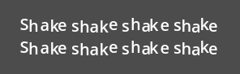
Shake làm văn bản rung lắc. Định dạng thẻ của nó là [shake rate=20.0 level=5 connected=1]{text}[/shake].
rate điều khiển tốc độ rung của văn bản, level điều khiển khoảng lệch của văn bản so với gốc. Nếu connected là 1 (mặc định), các glyph có chữ ghép (ligature) sẽ được di chuyển cùng nhau. Nếu connected là 0, mỗi glyph được di chuyển riêng lẻ ngay cả khi chúng được nối bằng chữ ghép. Điều này có thể giúp tránh một số vấn đề kết xuất với chữ ghép của phông chữ.
Fade
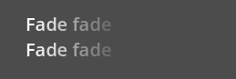
Fade tạo hiệu ứng mờ dần tĩnh, nhân độ mờ đục của từng ký tự. Định dạng thẻ của nó là [fade start=4 length=14]{text}[/fade].
start điều khiển vị trí bắt đầu mờ dần tính từ chỗ chèn lệnh fade, length điều khiển số ký tự mà hiệu ứng mờ dần trải dài.
Rainbow
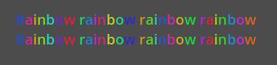
Rainbow tô văn bản bằng màu cầu vồng thay đổi theo thời gian. Định dạng thẻ của nó là [rainbow freq=1.0 sat=0.8 val=0.8 speed=1.0]{text}[/rainbow].
freq xác định cầu vồng trải dài qua bao nhiêu chữ cái trước khi lặp lại, sat là độ bão hòa của cầu vồng, val là giá trị (độ sáng) của cầu vồng. speed là số chu kỳ cầu vồng đầy đủ mỗi giây. Giá trị speed dương sẽ phát hoạt ảnh xuôi, giá trị 0 sẽ tạm dừng hoạt ảnh, và giá trị speed âm sẽ phát hoạt ảnh ngược lại.
Viền chữ (outline) không bị ảnh hưởng bởi hiệu ứng cầu vồng (chúng giữ nguyên màu gốc). Màu phông chữ hiện có sẽ bị hiệu ứng cầu vồng ghi đè. Tuy nhiên, các thuộc tính Modulate và Self Modulate của CanvasItem sẽ ảnh hưởng đến diện mạo của hiệu ứng cầu vồng, vì modulate nhân với màu cuối cùng của nó.